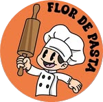

Elegí una categoría o buscá una receta.
Probá con otra búsqueda o elegí una categoría diferente.
El acceso de administrador se habilitará al configurar el inicio de sesión y los permisos de Firebase.
Esta versión es una demostración. Las recetas de ejemplo todavía no son recetas oficiales.